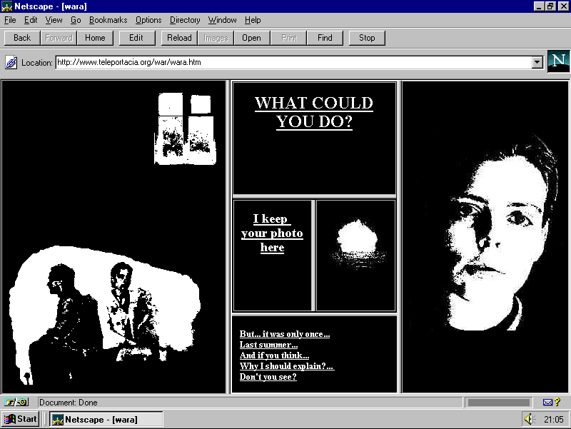
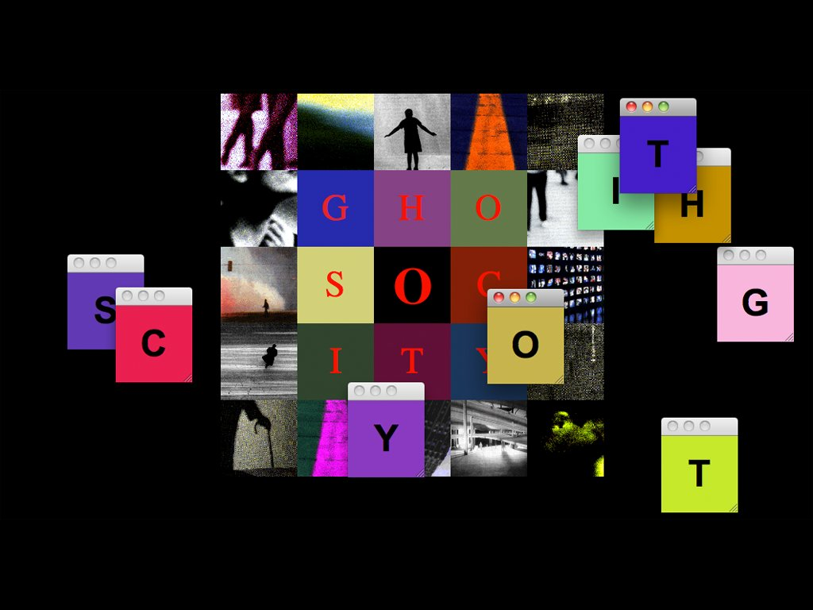

image source
| Web Artist | Characteristics and Notable Works | Thumbnail Image |
|---|---|---|
| Olia Lialina | Olia Lialina is an Internet artist and theorist, an experimental film and video critic and curator. ArtworkL:My boyfriend came back from the war is one of the first engaging hyper text net art narrative in which the story unfolds by clicking on images and texts in various sized windows within the frame. Created by Olia Lialina in 1996, this work will always be considered a classic.source citation |  image source |
| Web Artist | Characteristics and Notable Works | Thumbnail Image |
|---|---|---|
| Alexei Shulgin | Alexei Shulgin and Natalie Bookchin's Introduction to net.art serves as a self aware, tongue-in-cheek manifesto for the net art scene of the 90's. It offers a simplified beginners guide to net art, followed by DIY instructions on how one can become a net artist. source citation | image source |
| Web Artist | Characteristics | Thumbnail Image |
|---|---|---|
| Auriea Harvey | Auriea Harvey is an artist producing simulations and sculptures that bridge physical and digital space. After plumbing the depths of net art and video games, she turned her attention to 3D modeling, printing, and mixed reality. Her work consists of sculptures that blend digital and handmade production. Launched in 1995, Entropy8 is a landmark in the history of net art, epitomizing Harveys vision of the internet as a viable platform for born-digital artworks. At a time when artist pages made up a significant portion of the nascent web, Harvey stood out by audaciously resisting browser limitations.source citation |  image source |
| Web Artist | Characteristics and Notable Works | Thumbnail Image |
|---|---|---|
| Marcin Ramocki | Marcin Ramocki is a Polish-born NY artist working with a variety of computer centered media. Japanatious is a generative piece based on syllabic sounds of Japanese language. The random progression of sounds and images creates torn, nonsensical statements. For a non-Japanese speaker the flow appears as an endless monologue, revealing itself in a form of sonic portraiture. The images were produced by degrading video to 1-bit stills and animating them.source citation |  image source |
| Web Artist | Characteristics and Notable Works | Thumbnail Image |
|---|---|---|
| Jody Zellen | Jody Zellen is an American artist and educator. Her practice, consisting of digital art, painting, video art, and drawing, has been showcased by way of interactive installations, public art, and curated exhibitions. GHOST CITY is an every changing travelogue through a ficticious city. It explores grids as a metaphor for the many different paths one can journey down in the ancient as well as modern city.source citation |  image source |